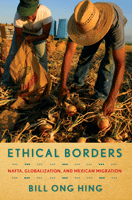

<body bgcolor="#FFFFFF" text="#000000" link="#0000FF" vlink="#CC0000" alink="#CC0000"><center><hr width="350" size="1" align="center" noshade>A fresh, responsible approach to addressing undocumented Mexican migration through substantial investment in Mexico's infrastructure and economy<hr width="350" size="1" align="center" noshade><p><a href="https://cdcshoppingcart.uchicago.edu/Cart/ChicagoBook.aspx?ISBN=9781592139248&&PRESS=temple" target="_top">Buy this book!</a> | <a href="https://cdcshoppingcart.uchicago.edu/Cart/Cart.aspx?PRESS=temple" target="_top">View Cart</a> | <a href="https://cdcshoppingcart.uchicago.edu/Cart/Cart.aspx?PRESS=temple" target="_top">Check Out</a></p><p></p></center><!--none//--><h1>Ethical Borders</h1>
<H2>NAFTA, Globalization, and Mexican Migration</H2>
<h3>Bill Ong Hing</h3>
<P>cloth 1-59213-924-8 $75.50, Apr 10, <FONT COLOR=#990033>Available</FONT>
<br>paper 1-59213-925-6 $29.95, Apr 10, <FONT COLOR=#990033>Available</FONT>
<br>Electronic Book 1-59213-926-4 $29.95 <FONT COLOR=#990033>Available</FONT>
<BR> 248 pp
6x9
</P><BLOCKQUOTE><I></i></i>"Ethical Borders<i> is a surprisingly useful book. I thought that it was a well-known story�that NAFTA was an incomplete union that didn't tackle labor flows, that its implementation worsened undocumented immigration, etc.�but Hing puts it all together in one place. He is a fluid writer, who generally offers just the right level of detail and covers the appropriate issues. In short, </i>Ethical Borders<i> is very readable and provides a good platform for thinking about the issues and an even better platform for teaching about them</i>."<br> <b>&#151Manuel Pastor</b>, Professor of American Studies and Ethnicity and Codirector of the Center for the Study of Immigrant Integration at the University of Southern California</I></BLOCKQUOTE>
<p>In his topical new book, <em>Ethical Borders</em>, Bill Ong Hing asks, why do undocumented immigrants from Mexico continue to enter the United States and what would discourage this surreptitious traffic? An expert on immigration law and policy, Hing examines the relationship between NAFTA, globalization, and undocumented migration, and he considers the policy options for controlling immigration. He develops an ethical rationale for opening up the U.S./Mexican border, as well as improving conditions in Mexico so that its citizens would have little incentive to migrate.
</p><p>
In <em>Ethical Borders</em> Hing insists that reforming NAFTA is vital to ameliorating much of the poverty that drives undocumented immigration and he points to the European Union's immigration and economic development policies as a model for North America. Hing considers the world-wide economic crisis and the social problems that attend labor migration. He argues for a spectrum of changes, including: a new vision of border enforcement; a broader view of the visa system; a path to citizenship for undocumented migrants; and consideration of a guest worker program.
</p><p>
Hing also situates NAFTA and its effects in the larger, and rapidly shifting, context of globalization&mdash;particularly the recent rise of China as the world's economic giant. Showing how NAFTA�s unintended consequences have been detrimental to Mexico, Hing passionately argues that the United States is ethically bound to address the problems in a way that puts prosperity within the grasp of all North Americans.
</p>
<BR>&nbsp;<h2>Excerpt</h2><P>Excerpt available at <a href="http://www.temple.edu/tempress">www.temple.edu/tempress</a></p>
<BR>&nbsp;<h2>Reviews</h2>
<p><i>"Everyone knows that the immigration system in the United States is broken. Anyone who is interested in learning how to fix it should read </i>Ethical Borders<i>. Bill Ong Hing compellingly argues that U.S. immigration problems cannot be resolved without pursuing new regional policies that address the forced emigration of thousands of Mexicans who have lost their livelihoods as a consequence of North American economic integration. In doing so, he shows how free movement of workers across the Mexico-U.S. border could benefit both countries once smart and affordable public investments were made that reduced the pressures on Mexican workers to leave their homes in search of better opportunities abroad."</i> <br><b>&#151David Spener</b>, Trinity University, author of <i>Clandestine Crossings: Migrants and Coyotes on the Texas-Mexico Border and coeditor of Free Trade and Uneven Development: The North American Apparel Industry after NAFTA</i>
<p><i>"In this broad, comprehensive overview, Hing packages and re-packages ongoing debates about the forces that impel Mexican migrants to move northward.... What makes the book special is the way Hing builds Canada (a NAFTA beneficiary) and Ireland into the puzzle of optimal and ethical policy strategies.... Summing Up: Recommended."</i><br>&#151<b><i>CHOICE</i></b>
<p><i>"In </i>Ethical Borders<i>, longtime immigration lawyer Bill Ong Hing has packed a great deal of information into 185 pages, which provides an excellent analysis of the 1993 North American Free Trade Agreement (NAFTA) in which he correctly identifies as the source of the latest wave of illegal immigration....Hing shows that it is Mexico�s economy that has been sucked dry, driving millions of subsistence farmers off the land and forcing them to migrate north to survive. He documents as well the waste, the futility, and the ugly human consequences of stepped-up federal efforts to 'secure our border.'... </i>Ethical Borders<i> is fundamentally concerned that immigrant workers get treatment that befits their humanity and their contribution to our country�s wealth...Teachers who mine its contents carefully will find much valuable information."</i> <br>&#151<b><i>Labor Studies Journal</i></b>
<BR>&nbsp;<P><p>Bill Ong Hing was a guest on <I><a href="http://dysonshow.org/?p=4560" target="new">The Michael Eric Dyson Show</a></I>, a national program/podcast, on April 15, 2011.
</p></P><BR>&nbsp;<br>
<h2>Contents</h2><P>
<p>Acknowledgments
<br>Introduction: <i>A Time to Think Broadly</i>
<br>1. The NAFTA Effect
<br>2. Revolutionary Mexico: <i>A Brief Economic and Political History</i>
<br>3. Canadian Stability and Responsibility
<br>4. The European Union Strategy
<br>5. Celtic Tiger: <i>The Irish Example</i>
<br>6. The Failed Enforcement Approach: <i>&quot;There Ain't No Reason to Treat Them Like Animals&quot;</i>
<br>7. Contemplating North American Integration and Other Alternatives
<br>Epilogue: <i>The Ethical Border: Thinking Outside the (Big) Box</i>
<br>Notes
<br>Bibliography
<br>Index</p>
</P><BR>&nbsp;<H2>About the Author(s)</H2>
<table><tr><td valign="top"><img src="/tempress/authors/1999_au1.gif" height="90" width="75"></td><td width="100%" valign="middle"><p><b>Bill Ong Hing</b> is a Professor of Law at the University of San Francisco and Professor Emeritus at the University of California, Davis. He teaches Immigration Law and Policy, Rebellious Lawyering, Negotiations, and Asian American History. Throughout his career, he has pursued social justice by combining community work, litigation, and scholarship. His books include <i><a href="1645_reg.html" target="_top">Defining America through Immigration Policy</a></i> (Temple) and <i>Deporting Our Souls: Values, Morality, and Immigration Policy</i>. Professor Hing was co-counsel in the Supreme Court asylum case <i>INS v. Cardoza-Fonseca</i> (1987). He is the founder of the Immigrant Legal Resource Center and serves on the National Advisory Council of the Asian American Justice Center.</P></td></tr></table>
<BR><H2>Subject Categories</H2>
<p><A HREF="/tempress/political.html" TARGET="_top">Political Science and Public Policy</a>
<BR><A HREF="/tempress/latin.html" TARGET="_top">Latin American/Caribbean Studies</a>
<BR><A HREF="/tempress/business.html" TARGET="_top">Business/Economics</a>
</p>
<p align="center"><a href="https://cdcshoppingcart.uchicago.edu/Cart/ChicagoBook.aspx?ISBN=9781592139248&&PRESS=temple" target="_top">Buy this book!</a> | <a href="https://cdcshoppingcart.uchicago.edu/Cart/Cart.aspx?PRESS=temple" target="_top">View Cart</a> | <a href="https://cdcshoppingcart.uchicago.edu/Cart/Cart.aspx?PRESS=temple" target="_top">Check Out</a></p><p><font face="Arial" size="1"><a href="copyright.html" onMouseOver="window.status='Web Copyright Policy';return true;" onMouseOut="window.status=''" title="Web Copyright Policy">&copy;</a> 2015 <a href="http://www.temple.edu" target="new" onMouseOver="window.status='Link to Temple University home page';return true;" onMouseOut="window.status=''" title="Link to Temple University home page">Temple University</a>. All Rights Reserved. http://www.temple.edu/tempress/titles/1999_reg.html</font></p>